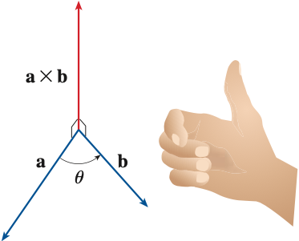
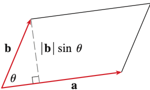
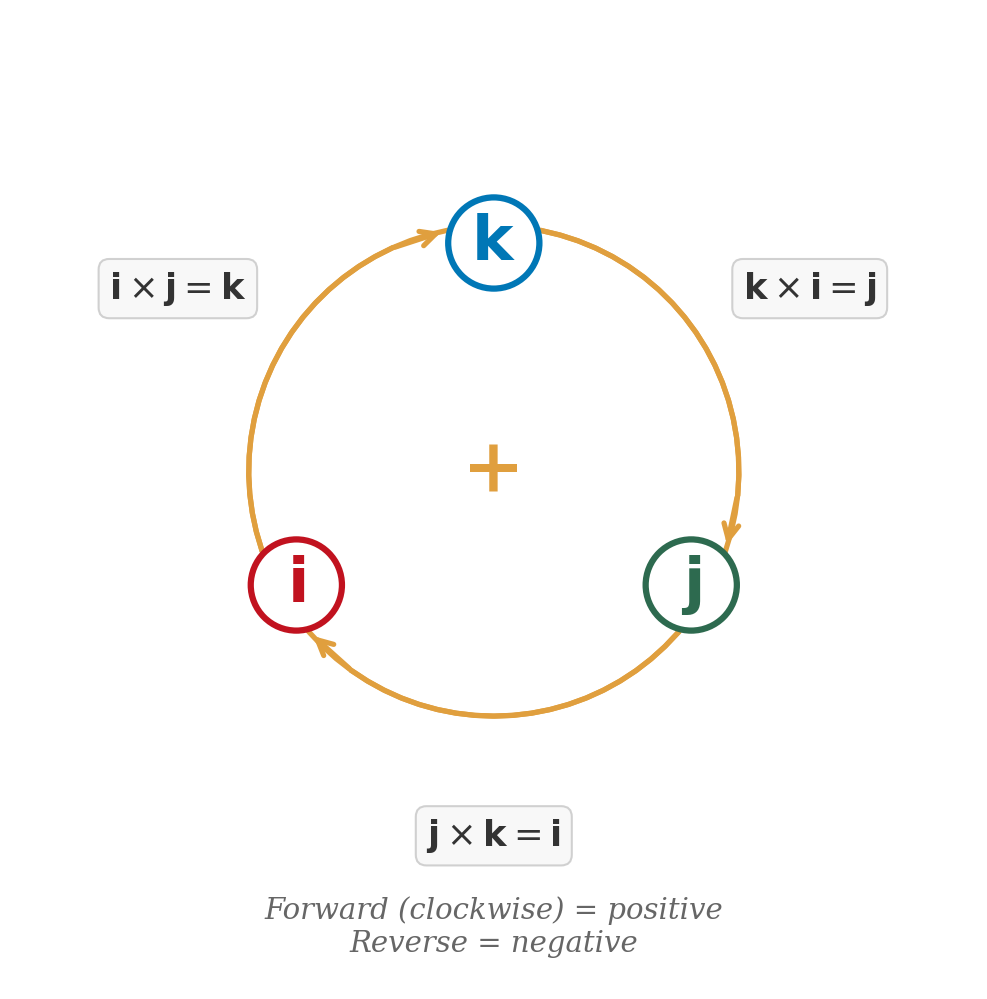

Section 12.4: The Cross Product
Vectors and the Geometry of Space
MTH 310
Calculus III
The Cross Product — A New Kind of Product
Quick Review: Determinants
2 $\times$ 2 Determinant
\[\begin{vmatrix} a & b \ c & d \end{vmatrix} = ad - bc\]
Example 1
Compute the determinant \(\begin{vmatrix} 2 & 3 \ 4 & 1 \end{vmatrix}\).
3 $\times$ 3 Determinant (Cofactor Expansion)
Expand along the first row:
\[\begin{vmatrix} a_1 & a_2 & a_3 \ b_1 & b_2 & b_3 \ c_1 & c_2 & c_3 \end{vmatrix} = a_1 \begin{vmatrix} b_2 & b_3 \ c_2 & c_3 \end{vmatrix} - a_2 \begin{vmatrix} b_1 & b_3 \ c_1 & c_3 \end{vmatrix} + a_3 \begin{vmatrix} b_1 & b_2 \ c_1 & c_2 \end{vmatrix}\]
Notice the alternating signs: \(+\), \(-\), \(+\).
Example 2
Compute the determinant:
\[\begin{vmatrix} 2 & 3 & 1 \ 4 & 1 & -3 \ -2 & 5 & 2 \end{vmatrix}\]
The Cross Product Formula
Cross Product
If \(\vec{a} = \langle a_1, a_2, a_3 \rangle\) and \(\vec{b} = \langle b_1, b_2, b_3 \rangle\), then:
\[\vec{a} \times \vec{b} = \begin{vmatrix} \vec{i} & \vec{j} & \vec{k} \ a_1 & a_2 & a_3 \ b_1 & b_2 & b_3 \end{vmatrix}\]
Example 3: Computing a Cross Product
Example 3
Let \(\vec{a} = \langle -1, 3, 4 \rangle\) and \(\vec{b} = \langle 5, 2, 1 \rangle\). Find \(\vec{a} \times \vec{b}\).
Your Turn: Cross Product Practice
Example 4
Compute \(\langle 1, 0, 2 \rangle \times \langle 3, 1, -1 \rangle\).
Key Properties of the Cross Product

Magnitude of the Cross Product
Magnitude Formula
\[|\vec{a} \times \vec{b}| = |\vec{a}|\,|\vec{b}|\,\sin\theta\]
where \(\theta\) is the angle between \(\vec{a}\) and \(\vec{b}\) (\(0 \leq \theta \leq \pi\)).
Area from the Cross Product


Example 5: Normal Vector and Area from Three Points
Example 5
Given \(P(-2, 1, 7)\), \(Q(-3, 4, 11)\), and \(R(3, 3, 8)\):
(a) Find a vector perpendicular to the plane through \(P\), \(Q\), \(R\).
(b) Find the area of triangle \(PQR\).
Cross Products of the Standard Basis Vectors
